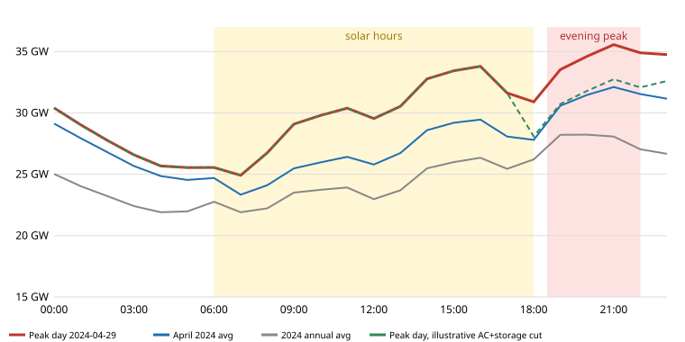

Thailand's electricity squeeze: where the waste is, and what fixes it fastest
About: an independent research note compiled from public data and published reports. It is not affiliated with, commissioned by, or reviewed by any Thai government agency, utility or company. Last updated: 26 September 2026.
How to read the tags:verified figure read in the original source ·
derived computed by us from verified data (scripts below) ·
review estimate screening estimate from an independent review of this study, built on stated but largely unsourced assumptions — indicative only ·
assumption our own modelling choice.
Key conclusions
Thailand does not have a capacity shortage; it has a fuel-cost and timing problem. In 2024 contracted capacity was 51.4 GW against a 36.5 GW peak (≈41% reserve) derived [R2]. Gas produced 65.5% of domestic electricity in 2025 derived [R1][R7], and imported LNG is now the marginal fuel: at >US$21/MMBtu (July 2026) gas power costs ≈5–5.5 THB/kWh in fuel alone derived [R9].
The system peak has moved to the evening. On 97% of days in 2023–2024 the daily peak fell between 19:00 and 21:59; the 2024 hourly maximum was 35.6 GW at 21:00 on 29 April derived [R3]. Solar without storage contributes nothing at that hour.
"Energy is wasted by poor efficiency" is half right. Grid losses (≈7% of output; PEA 5.0%, MEA 2.1%) are mid-range for the region and not the main problem verified [R4][R5][R6]. The largest physical waste is in cooling: the best air-conditioners on the Thai market use 41–52% less electricity than the typical model sold derived [R18]. On the cost side, analyses by CSIS and the IEA point to a high reserve margin and inflexible take-or-pay terms in fuel contracts as factors that raise system costs [R10][R11].
The cheapest options are on the demand side. Screening costs: AC retrofit ≈0.76 THB per kWh saved, building energy management ≈0.9, rooftop solar ≈2.1 per kWh supplied, versus ≈4.2 for a new LNG-fired plant and ≈6.45 for solar-plus-storage delivered in the evening review estimate. Our own sourced-input check gives the same ordering but wider ranges (AC 0.9–3.6; rooftop solar 1.6–1.9; new gas 3.0–6.1) derived.
Air-conditioning is the main lever on the evening peak. AC efficiency could cut roughly 2,150 MW of evening peak versus about 660 MW for the storage block modelled review estimate. Most AC electricity is used in homes and small shops, not large buildings. A household replacing an old 1.5-hp (12,000 BTU) unit recovers the cost in about 2–4 years; the barrier is the ≈10,000+ THB upfront price, so zero-interest instalments repaid through the electricity bill are the cheapest tool for government review estimate.
Import tariffs are not the bottleneck for efficient Chinese ACs. Split/window ACs from China face 5% under the ASEAN–China FTA (30% MFN) verified [R31]. Thailand is itself one of the world's largest AC exporters (US$6.9 bn in 2024; ≈22% of world exports in CLASP's 2019 assessment, second to China) verified [R32][R18]. The constraints are upfront cost, financing, installation quality and slow replacement of the old stock.
1. The problem
1.1 Heavy reliance on gas, with LNG at the margin
Indicator
Value
Status / source
Gas share of domestic generation, 2025
65.5%
derived EPPO [R1]; Ember gives the same [R7]
Imports (mostly Lao hydro) share of total supply, 2025
17.2%
derived [R1]
LNG share of gas supply
≈29% (2024) · Ember projects 40% (2024) → 60% (2035) on its basis
verified [R10][R15]
Asian LNG price
≈US$10.5/MMBtu before the 2026 disruption → >US$21 in July 2026
verified [R9]
Capacity payments in the tariff
≈0.63 THB/kWh, ≈17% of base tariff (early 2026, CSIS estimate)
verified [R10]
Gas-fired plants with capacity factor <10%, 2025 (IEEFA count)
7 plants
verified [R8]
Average tariff, Sep–Dec 2026 (ex-VAT)
3.95 THB/kWh
verified [R25]
On contract mechanisms: Thai power-purchase agreements generally include capacity (availability) payments, and gas supply contracts include take-or-pay terms. These are standard designs in long-term power and gas contracts internationally and are not in themselves irregular. The joint IEA–EGAT study finds that such terms limit dispatch flexibility [R11]; CSIS and IEEFA argue that, with a high reserve margin, they raise tariffs [R10][R8]. These are the views of the cited institutions.
1.2 The evening peak

EGAT-system hourly demand, 2024 (sum of five regions). Data: EGAT public website, archived by Bunnak (2025), Zenodo, CC-BY-4.0 [R3]. Hourly snapshots understate the instantaneous official peak (36,478 MW in 2024 [R2]; national peak 36,759 MW at 20:50 on 22 April 2026 [R9]). The dashed green line is an illustration only: it subtracts the review estimates for AC efficiency (2,150 MW, 18:00–24:00) and storage (660 MW, 18:00–23:00). It shows the peak shifting to the afternoon (16:00), so the net reduction on this day would be ≈1,760 MW, not the full 2,810 MW — peak-cutting measures have to be sized against the whole daily curve. Script: scripts/hourly_profile.py.
Evening-peak facts
Value
Status
Days whose daily peak fell between 19:00 and 21:59
96.7% (2023) · 97.0% (2024)
derived [R3]
Average monthly load factor
80.7% (2019) → 77.6% (2025): peaks rising faster than energy
derived [R1]
Rooftop solar output at 20:00–21:00
0 MW without storage
physical
1.3 What is planned
The draft Power Development Plan 2026 (public consultation from 8 September 2026) adds 50.9 GW in 2026–2037: 24.3 GW solar, 14.5 GW battery storage, 9.1 GW combined-cycle gas, 2.7 GW wind and 2.66 GW demand response/distributed resources, a first 300 MW small modular reactor in 2037, and an 8.8 GW high case for data centres verified [R23]. Nuclear therefore plays no role in the next few years.
A cost issue, not an energy loss; addressed through planning and contract design, not hardware
C. Grid
T&D losses 7.16% (2023) verified [R4]; PEA 5.03% (2024) [R5]; MEA 2.13% (2022) [R6]
Vietnam 6.6%, Japan 4.9%, China 3.4% (2023) [R4]
Reaching Japan's level saves ≈5 TWh/yr, ≈4% of gas generation derived
D. End use: cooling
AC = 57% of hotel electricity (63 hotels) [R28]; typical vs best 12k BTU unit SEER 13.0 vs 27.3 [R18]
Best-available technology can be made in Thailand [R14]
Same cooling with 41–52% less power derived; standards + labels could cut AC use ≈18% by 2030 [R18]
E. Other end uses
Six appliance/equipment standards could save ≈18 TWh/yr by 2040 [R19]
—
Lighting, motors, transformers, refrigeration
Scale check (not additive): 2025 gas generation 123 TWh · grid loss reduction to Japan's level ≈5 TWh/yr · equipment standards ≈18 TWh/yr by 2040 (≈11 TWh from AC) · generation minus sales 19 TWh (upper bound of losses and own use) derived. End-use efficiency is 2–3× larger than grid loss reduction.
3. What research institutions say — and who plans the system
Issue
Broad agreement
Disagreement
Gas / LNG
Rising LNG dependence is the main price and security risk (IEA [R13], Ember [R15], CSIS [R10], IEEFA [R8], Chula ERI–Agora [R16])
New gas plants: the draft PDP includes 9.1 GW [R23]; Ember's least-cost pathway replaces ≈2 GW of planned new gas with solar + storage [R15]
Cooling efficiency
Cooling is the main driver of demand growth; standards can cut it substantially. IEA: cooling 16% of SE-Asian building electricity, ≈30% by 2035 [R13]. LBNL: AC efficiency alone could reduce Thailand's peak demand by 5–12 GW by 2030 [R20]. ERIA: stronger policies cut 2050 primary energy 25% below business-as-usual [R22]. CLASP: −18% AC electricity by 2030 [R18]
The size varies by method; LBNL finds Thailand's top market is already efficient (inverters ≈48% of sales) — the gap is the old stock and the low end [R21]
Decarbonisation
IEA with EGAT and the Ministry of Energy: under PDP2018, power emissions would exceed Thailand's targets by 44% in 2030 and 80% in 2037; 32 GW of extra wind and solar by 2030 closes most of the gap [R12]
Ember finds wind uncompetitive in Thailand; the draft PDP still includes 2.7 GW [R15][R23]
Grid losses
No institution treats Thai grid losses as a major problem (≈7%) [R4][R20]
—
Flexibility
IEA with EGAT: making fuel contracts flexible cuts operating cost by up to ≈2%, versus <0.05% for plant retrofits and <0.1% for storage under 2021 conditions [R11]
Battery costs have since fallen (≈US$117/kWh global turnkey average, 2025 [R27]); Ember and the draft PDP now include large battery fleets [R15][R23]
Policy
TDRI: targeted rather than universal subsidies, time-of-use pricing, "efficiency first" retrofits of AC, lighting and controls, and linking the efficiency plan to the power plan [R17]
—
Who does the technical planning. EPPO (Ministry of Energy) is secretariat to the National Energy Policy Council and chairs the load-forecast working group; demand is forecast with econometric and end-use models (Thammasat University models for PDP2015; a NIDA long-term model for the 2024 draft). EGAT drafts the supply plan and built a PLEXOS model of the Thai system with the IEA. EPPO staff were trained on LEAP/NEMO by SEI, and GIZ supports an EPPO data-for-modelling community of practice. The ERC regulates tariffs (including the four-monthly Ft), DEDE runs the building energy code and the efficiency plan (draft EEP 2024: −36% energy intensity by 2037), and the long-term climate strategy uses the AIM/EndUse and AIM/CGE models. Full table with tools, reports and sources: research/INSTITUTIONS.en.md (中文).
4. Cost comparison
4.1 Screening costs used on this site review estimate
Option
THB per kWh
Basis
Evening-peak effect
AC retrofit + controls
≈0.76
saved
≈2,150 MW
Building energy management
≈0.9
saved
partial (buildings close in the evening)
Rooftop solar (self-use)
≈2.1
supplied, daytime
≈0 at 20:00–21:00
New LNG-fired combined cycle (base LNG US$14)
≈4.2
supplied
firm
Solar + storage (evening kWh)
≈6.45
shifted
≈660 MW (block modelled)
Where these numbers come from. They are reproduced exactly by review/codex-energy/analysis/cost_curve.py from review/codex-energy/assumptions.yaml (6% real discount rate, 35 THB/US$). Most inputs in that file are flagged estimate: true (e.g. AC retrofit 12,000 THB per kW, saving 2,200 kWh/kW/yr). Solar + storage ≈ rooftop solar (2.11) + storage shift (4.35). The 2,150 MW AC figure is 5% of evening demand in a scenario that also adds the 8.8 GW data-centre high case; on today's load, 5% is ≈1,780 MW. These are not measured values; they are the review's corrected screening figures and are used here as the headline because they supersede an earlier draft.
4.2 Cross-check with sourced inputs derived
Option (our model, 6% real)
THB/kWh
Main sourced inputs
AC 24k BTU: buy best-available instead of typical at replacement
0.94
Unit prices and SEER of typical vs best Thai-market units, 2,920 h/yr, 10.5-yr life (CLASP 2019) [R18]
AC 12k BTU: same
2.25
AC early retrofit (full new-unit cost), home hours / double hours assumption
New combined cycle on LNG (LNG $10.5 / $21), CF 50% assumption
3.0–3.3 / 5.5–6.1
US$923/kW (EGAT tender via IEEFA) [R8]
Benchmarks
avg tariff 3.95 · TOU peak 5.11 · off-peak 2.60
[R25][R26]
Both approaches agree on the ranking: AC efficiency < rooftop solar < new gas, with evening storage the most expensive per kWh but the only non-fuel option that is firm at 21:00. Measures without a public cost (building controls, demand response, loss reduction) are shown in model/breakeven.csv as the maximum affordable upfront cost.
5. Air-conditioning policy
5.1 Where the waste is
AC is the largest single end use in Thai homes that have it: 26.5% of household electricity in a national survey (2018), 60–65% in EPPO- and DEDE-based figures cited in later studies, which use different bases (e.g. only homes with AC) [R35].
About 55% of households own an AC (2026, as reported) [R34]; national statistics give 39–44% depending on year and definition [R33]. Annual sales are ≈1.6 million units (2023) [R36].
Most of the stock is still fixed-speed: inverters were 32% of models in 2019 [R18] and ≈48% of sales by 2021 [R21]; the old minimum standard (2010) allowed EER ≈2.5–2.8 W/W versus 5.6 W/W for the best Thai-made unit [R18][R14].
Screening split of AC demand: ≈64 TWh/yr, ≈21.6 million units, ≈13 GW at 20:00 (≈38% of the evening peak, range 31–46%). By volume the largest shares are homes (≈35 TWh) and small shops/SMEs (≈19 TWh); hotels, malls, offices and government together are ≈10 TWh review estimate. Hotels are a good entry point (AC 57% of their electricity [R28]) but not the largest volume.
Operation matters too: each +1 °C on the thermostat saves ≈4.5% (EGAT) to 6–10% (U4E) [R39][R19]; since March 2026 government offices must set 26–27 °C and cut use 10%, expected to save 7.2 million kWh per month [R38].
5.2 Household economics and programme scale review estimate
Old fixed-speed → efficient inverter (at 4.2 THB/kWh)
Scale: every 1 million units replaced cuts the evening peak by ≈360 MW; 5 million units ≈1.8 GW review estimate. Script: review/codex-ac/build_research_outputs.py (fetches public tariff, trade and statistics data).
5.3 Tariffs and trade
HS 8415.10.10 (split/window ACs ≤26.38 kW): MFN 30%, ASEAN–China FTA 5% in 2024–2026 verified [R31]. Excise on ACs up to 72,000 BTU was cut from 15% to zero in 2009 [R37].
Thailand exported US$6.89 bn of HS 8415 goods in 2024 verified [R32]; CLASP (2019) put Thailand at ≈9% of world RAC production and ≈22% of world exports, second only to China [R18].
Retail price samples do not show Chinese-market units being systematically cheaper after duty and VAT review estimate. Conclusion: lowering tariffs further would do little; financing, installer quality, scrapping old units and stricter standards matter more.
5.4 A practical AC package
On-bill 0% instalments through MEA/PEA for top-label inverter units, with the old unit collected and destroyed.
Targeted rebates (e.g. 3,000–4,000 THB/unit) for low-income households and small shops, limited to the highest efficiency tier review option.
Bulk procurement to push down prices of top-tier units, sourcing from factories already in Thailand.
Ratchet the minimum standard and label (last major revision of the MEPS was 2010) [R18].
Setpoint, cleaning and installer-training campaigns; measure savings on a sample of metered homes and buildings (M&V).
6. Policy options
Horizon
Option
Why
0–2 years
AC replacement and setpoint programme (section 5)
Cheapest kWh; hits the 21:00 peak
Expand time-of-use pricing and paid demand response
EGAT's pilot is 50 MW [R29]; EPPO once estimated up to 1,250 MW of potential [R40]
Reform rooftop-solar rules (e.g. net metering, faster approvals), pair with storage for the evening
Real discount rate 6% (sensitivity 3% and 10%); exchange rate 33.2 THB/US$ (our model) or 35 (review model).
LNG US$10.5 and US$21/MMBtu (our model); US$8/14/22 (review model).
Generation minus sales is treated as an upper bound for losses plus own use, not as technical loss.
8.4 Limitations
No public Thai data split the evening peak by end use; the AC share at 20:00 is a modelled estimate.
Thai installed costs for storage, building controls, demand response and grid-loss projects are not public.
The hourly data are hourly snapshots of the EGAT system (excluding behind-the-meter solar), archived by a third party.
Review estimates (orange tags) rest on placeholder inputs and were not independently verified; they should be replaced by metered pilot results and local quotes before any investment decision.
EPPO fuel-use tables show an implausible jump in implied gas-plant efficiency after 2023, so they were not used for heat rates.
References
All accessed 25–26 September 2026 (UTC). Institution sources N1–N36 are listed in research/INSTITUTIONS.en.md.
[R1] EPPO open data, electricity tables 11_26–11_38 (monthly, 1986–2026). https://www.eppo.go.th
[R3] Bunnak, P. (2025). Thai Power System: Hourly Power Generation, Demand, and Cross-Border Flows (from EGAT). Zenodo, CC-BY-4.0. https://zenodo.org/records/17109911
[R4] World Bank WDI, EG.ELC.LOSS.ZS (IEA data). https://data.worldbank.org/indicator/EG.ELC.LOSS.ZS?locations=TH
[R5] PEA Sustainability Report 2024 (distribution loss 5.03%). https://www.pea.co.th
[R6] MEA electricity sales report, December 2022 (loss 2.13%). https://www.mea.or.th
[R7] Ember, yearly electricity data and Thailand country page (updated 2026-04-22). https://ember-energy.org/countries-and-regions/thailand/
[R8] IEEFA (2026-03). Thailand's gas conundrum. https://ieefa.org/sites/default/files/2026-03/IEEFA_Thailand%20gas%20conundrun%20report_updated%20March2026.pdf
[R9] IEEFA (2026-08). Reforming Thailand's rooftop solar policy framework to reduce gas dependence. https://ieefa.org/sites/default/files/2026-08/IEEFA%20Report_Reforming%20Thailand%27s%20rooftop%20solar%20policy%20framework%20to%20reduce%20gas%20dependence_August%202026.pdf
[R10] CSIS (2026-08-27). The uncertain future of Thailand's gas sector. https://www.csis.org/analysis/uncertain-future-thailands-gas-sector
[R11] IEA (2021). Thailand Power System Flexibility Study. https://iea.blob.core.windows.net/assets/ba95b0f3-ec1d-42d3-8288-78438dafad03/ThailandPowerSystemFlexibilityStudy.pdf
[R13] IEA (2024-10). Southeast Asia Energy Outlook 2024. https://www.iea.org/reports/southeast-asia-energy-outlook-2024
[R14] IEA (2019). The Future of Cooling in Southeast Asia. https://www.iea.org/reports/the-future-of-cooling-in-southeast-asia
[R15] Ember (2025-09). Thailand's cost-optimal pathway to a sustainable economy. https://ember-energy.org/app/uploads/2025/09/Report-Thailands-cost-optimal-pathway-to-a-sustainable-economy-PDF.pdf
[R16] Agora Energiewende & Chulalongkorn University Energy Research Institute (2025). Thailand's Natural Gas Crossroads. https://www.agora-energiewende.org/fileadmin/Partnerpublikationen/2025/Thailands-Natural-Gas-Crossroads-Report.pdf
[R17] TDRI (2026-04). Energy policy: stability and structural transition. https://tdri.or.th/2026/04/energy-policy-stability-structural-transition/
[R18] CLASP (2019). Thailand Room Air Conditioner Market Assessment and Policy Options Analysis. https://www.clasp.ngo/wp-content/uploads/2021/01/2019-Thailand-Room-Air-Conditioner-Market-Assessment-and-Policy-Options-Analysis.pdf
[R19] UNEP U4E (2022-07). Thailand Country Savings Assessment. https://united4efficiency.org/wp-content/uploads/2022/08/THA_U4E-Country-Saving-Assessment_Jul-22.pdf
[R20] LBNL (2015). Benefits of Leapfrogging to Superefficiency and Low GWP Refrigerants in Room Air Conditioning (LBNL-1003671). https://eta-publications.lbl.gov/sites/default/files/lbnl-1003671.pdf
[R21] LBNL (2021-05). Harmonizing Energy-Efficiency Standards for Room Air Conditioners in Southeast Asia. https://eta-publications.lbl.gov/sites/default/files/asean_ac_ee_harmonization_final_may_2021.pdf
[R22] ERIA (2023). Energy Outlook and Energy Saving Potential in East Asia 2023, Ch.16 Thailand. https://www.eria.org/uploads/media/Books/2023-Energy-Outlook/22_Ch.16-Thailand.pdf
[R24] Nation Thailand (2026-08-28). Direct PPA, data-centre tariff, solar and LNG power costs. https://www.nationthailand.com/news/policy/40070384 ; Dentons (2026-08-14) Direct PPA pilot for data centres. https://www.dentons.com/en/insights/alerts/2026/august/14/thailands-direct-ppa-pilot-for-data-centres-what-has-changed-since-early-2026
[R25] Thairath English (2026-07-23). Ft for Sep–Dec 2026; average tariff 3.95 THB/kWh. https://en.thairath.co.th/news/governmentpolicy/2948113 ; ERC Ft page https://www.erc.or.th/th/automatic
[R26] PEA Electricity Tariffs (May 2023, EN) — TOU 5.1135 / 2.6037 THB/kWh. https://www.pea.co.th/sites/default/files/documents/tariff/EN_Electricity_Tariffs_May_2023.pdf
[R27] Energy-Storage.news, reporting BNEF Energy Storage Systems Cost Survey 2025 (US$117/kWh). https://www.energy-storage.news/battery-storage-system-prices-continue-to-fall-sharply-bnef-and-ember-reports-find/
[R28] Tangon et al. (2018). Energy use in 63 Thai hotels. Asia-Pacific Journal of Science and Technology. https://so01.tci-thaijo.org/index.php/APST/article/view/112302
[R29] EGAT (2023-08-24). Renewable Energy Forecast Center and Demand Response Control Center; 50 MW DR pilot. https://www.egat.co.th/home/en/20230824e/
[R30] EGAT (2026-09-15). SMR pre-feasibility study grant signed. https://www.egat.co.th/home/en/20260915e/
[R32] UN Comtrade public API, Thailand exports HS 8415, 2024. https://comtradeapi.un.org/public/v1/preview/C/A/HS?reporterCode=764&period=2024&partnerCode=0&cmdCode=8415&flowCode=X
[R33] National Statistical Office household surveys (via review). https://www.nso.go.th/nsoweb/storage/survey_detail/2024/20240718144458_11714.pdf
[R34] Nation Thailand (2026). Household AC ownership and setpoint savings. https://www.nationthailand.com/news/general/40063575
[R35] Pooltananan et al. (2019). Residential electricity consumption in Thailand (AC 26.5%). https://www.sciencedirect.com/science/article/pii/S2352484719309886
[R36] JRAIA (2024-07). World Air Conditioner Demand by Region. https://www.jraia.or.jp/english/statistics/file/World_AC_Demand_July2024.pdf
[R37] Nation Thailand (2012). Excise on air-conditioners (zero since Sept 2009). https://www.nationthailand.com/business/30178801
[R38] Government Public Relations Department (2026-03). Government agencies to cut energy use 10%, AC at 26–27 °C. https://thailand.prd.go.th/en/content/category/detail/id/52/iid/486432
[R39] EGAT (2023-04). Peak demand and energy-saving advice (+1 °C ≈4.5%). https://www.egat.co.th/home/en/20230426e/
[R40] GMSARN International Journal (2021). Demand response tariffs and potential in Thailand. https://gmsarnjournal.com/home/wp-content/uploads/2021/05/vol16no1-9.pdf